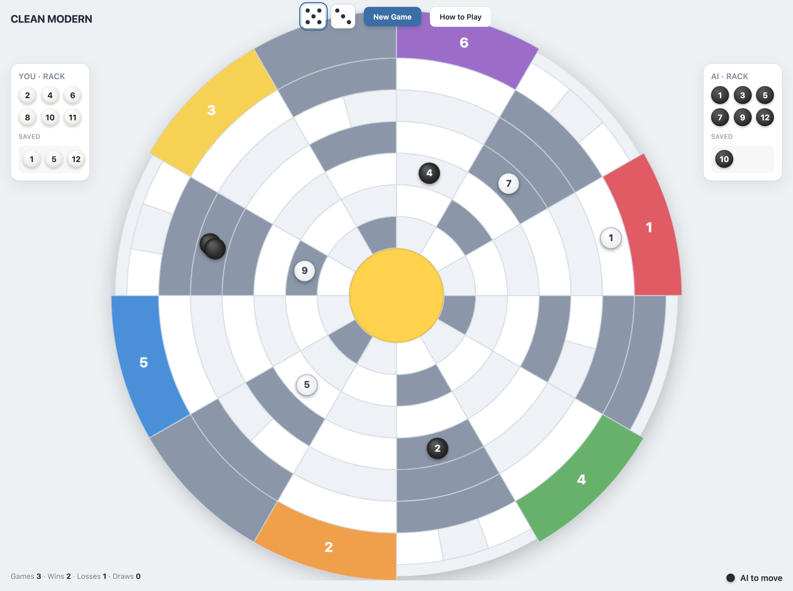
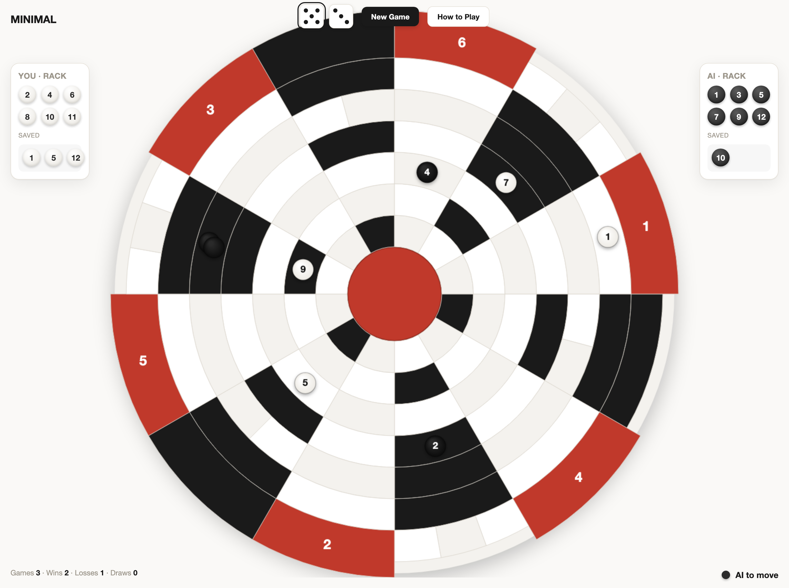
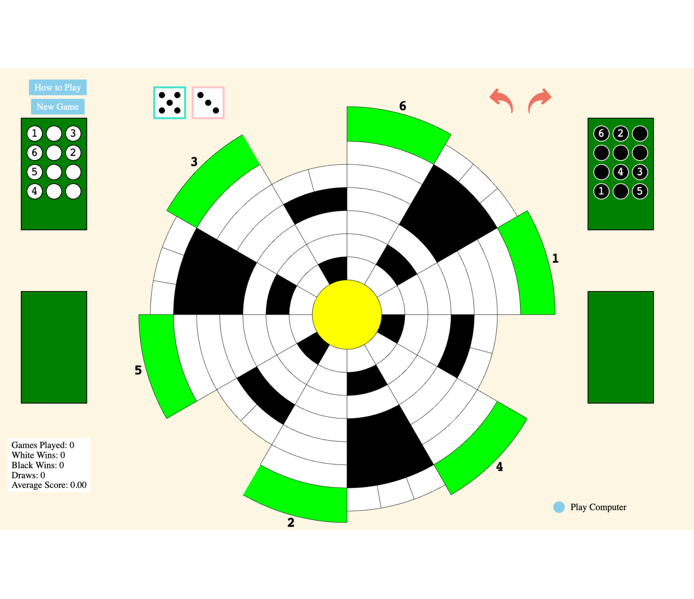

Same board geometry preserved exactly (rendered from the live game's extracted tile positions); each direction restyles the visual treatment + redesigns the racks / dice / buttons / HUD. Pick a direction (or a mix) and I'll implement it in the real game. For a live, resizable view open design/mock.html?dir=A (or B/C/D).

A · Clean Modern— soft light palette, crisp geometry, color-coded goals. Premium-app feel; most approachable.
C · Dark Premium— dark board, vivid goal accents, glowing hub. Sleek and modern.

D · Minimal / Bold— high-contrast black & white with a single red accent. Editorial / graphic.
Before (current):

Notes: the 6 colour-coded goals in A/B/C are a functional bonus (each goal identifiable at a glance) but optional. The blocked "nogo" pinwheel is styled to stay clearly distinct from the playable path in every direction. Piece rendering, dice, rack trays, buttons, status bar and turn indicator are all restyled per direction; these are mockups of the look — final implementation ports the chosen direction into game.js with the tile centres asserted byte-identical to today's board.